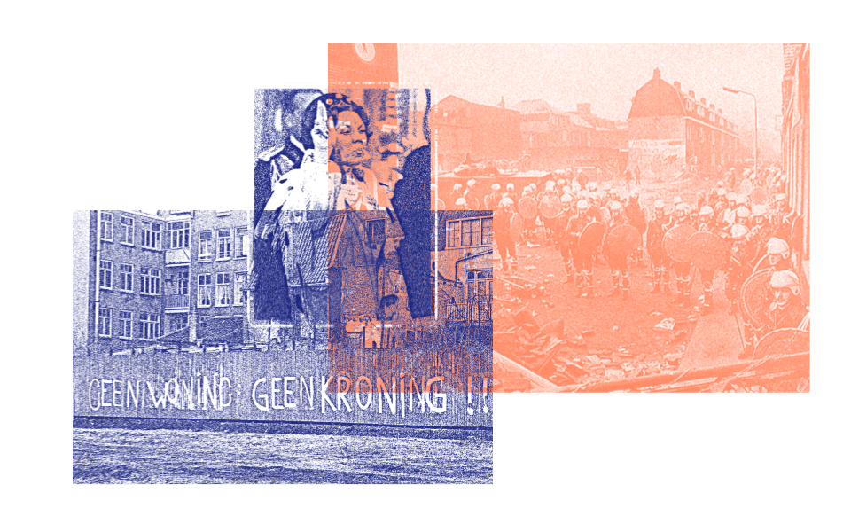

Na Europa dos anos 60, surgem os Squatters: movimento que ocupava casas e apartamentos desocupados e espaços negligenciados como forma de luta pelo direito de pertencer às cidades e aos centros urbanos. A marca da atuação desses grupos era o da coletividade e autonomia dos meios públicos e privados. Essas micro-comunidades organizadas adotavam mecanismos de gerenciamento coletivo em todas as faces do viver, e assim criaram um modelo de vida fora do sistema. Possuíam serviços internos como segurança, criação de mídias alternativas para a comunicação interna, propostas de lazer, além de educação e tarefas domésticas coletivas.
E foi pela a denúncia da carência por moradia digna nos centros urbanos, que na Holanda dos anos 80, durante as festividades de coroação da Rainha Beatrix, houve o maior confronto de civis desde a Segunda Guerra Mundial. Entre ameaças e manifestações, a cerimônia quase não ocorreu. O grito em comum era: “Geen woning, geen kroning”. Traduzindo: sem moradia, sem coroação.
Apesar do confronto violento, esse movimento deu início a diversas políticas inclusivas de direito à cidade e uma busca pela democratização do espaço urbano.
Até hoje, porém, grupos de ocupação ainda se organizam para preencher espaços vazios e sem uso social na cidade. As leis de urbanismo permitem a existência dessas ocupações com algumas regras básicas.
No Brasil, outros grupos organizados manifestam-se re-apropriando os espaços não utilizados nos centros urbanos e os transformam em complexos residenciais para pessoas sem teto.
Área comunitária no antigo edifício Wilton Paes de Almeida
"...os moradores de cortiços tornaram-se importantes atores sociais quando formaram movimentos para reivindicar o direito à moradia digna no centro da cidade e, principalmente, quando utilizaram a estratégia de ocupar edifícios vazios. Isso porque denunciam a falta de política de habitação de interesse social para as áreas centrais da cidade e expõem as contradições do setor imobiliário, que deixa os imóveis abandonados sem função social aguardando valorização." - Kohara.
A mídia é talvez a principal criadora dos preconceitos ligados a esses grupos, e replica uma imagem de anarquismo e vandalismo. Conhecer a realidade de quem pertence a esses grupos e vive nessa situação é essencial para separar falsos conceitos da realidade.
Vivemos em um país que nasceu a partir de ocupações e apropriações do espaço. Algo comum em outros períodos, era se assentar em um espaço sem uso e torná-lo produtivo e de uso social, e isso bastava.
Um outro fator que gera estranhamento no modelo de ocupação, é o fato de que por um olhar externo se aproxima do modelo de exploração dos cortiços.
Reflexo disso, são apresentados em ocupações geridas por intermediários que impõem modelos de exploração e se apropriam do caráter identitário dos movimentos de luta por moradia digna.
Preta Ferreira, militante MSTC (Movimento Sem Teto do Centro), faz um questionamento interessante sobre o peso da crise habitacional sobre a cidade: “pode-se considerar "sem-teto", todas aquelas pessoas que não possuem uma escritura de um patrimônio residencial. Assim, mesmo os locatários de um espaço podem rapidamente se tornar moradores de rua, caso algo os impeça de pagar o aluguel, por exemplo.” Pessoas que não possuem uma rede de apoio, como familiares e amigos que poderiam os hospedar, estão sempre na iminência de viver na rua, caso algo assim ocorra.
Fundamentalmente as ocupações se instalam em espaços sem função social. Isto é, espaços que se mantém inutilizados em partes por interesse da especulação imobiliária, que transforma os imóveis em "estoques" de lucros para momentos posteriores e flutuam com base na oferta e procura de imóveis.
O Estatuto da Cidade regulamenta os artigos da constituição sobre a função social da propriedade e da cidade – Lei 10.257/01.
"I – garantia do direito a cidades sustentáveis, entendido como o direito à terra urbana, à moradia, ao saneamento ambiental, à infra-estrutura urbana, ao transporte e aos serviços públicos, ao trabalho e ao lazer, para as presentes e futuras gerações;
II – gestão democrática por meio da participação da população e de associações representativas dos vários segmentos da comunidade na formulação, execução e acompanhamento de planos, programas e projetos de desenvolvimento urbano;
III – cooperação entre os governos, a iniciativa privada e os demais setores da sociedade no processo de urbanização, em atendimento ao interesse social;
IV – planejamento do desenvolvimento das cidades, da distribuição espacial da população e das atividades econômicas do Município e do território sob sua área de influência, de modo a evitar e corrigir as distorções do crescimento urbano e seus efeitos negativos sobre o meio ambiente;
V – oferta de equipamentos urbanos e comunitários, transporte e serviços públicos adequados aos interesses e necessidades da população e às características locais;
VI – ordenação e controle do uso do solo, de forma a evitar:
a) a utilização inadequada dos imóveis urbanos;
b) a proximidade de usos incompatíveis ou inconvenientes;
c) o parcelamento do solo, a edificação ou o uso excessivos ou inadequados em relação à infra-estrutura urbana;
d) a instalação de empreendimentos ou atividades que possam funcionar como pólos geradores de tráfego, sem a previsão da infra-estrutura correspondente;
e) a retenção especulativa de imóvel urbano, que resulte na sua subutilização ou não utilização;
f) a deterioração das áreas urbanizadas;
g) a poluição e a degradação ambiental;
h) a exposição da população a riscos de desastres naturais;
(Incluído pela Medida Provisória nº 547, de 2011).
h) a exposição da população a riscos de desastres. (Incluído dada pela Lei nº 12.608, de 2012)"
Planos como esse, promovem o bem-estar social, acesso aos serviços e à vida pública em comunidade, nos centros urbanos. Reduzem a formação de guetos, e com isso, buscam fortalecer um crescimento urbano inclusivo, além de criar uma mescla saudável de grupos sociais que se complementam nas atividades diárias da cidade.

"Enquanto isso em São Paulo, de 2000 a 2015, houve um crescimento de 82% nas populações em situação de rua. O déficit habitacional de São Paulo é de 600.000 domicílios. É muito. Mas os imóveis vagos disponíveis cobririam 84 desse déficit" - Cris Bartis, jornalista no Podcast Mamilos.
Em 2018, o caso do edifício Wilton Paes de Almeida, localizado no Largo do Paissandu, região central de São Paulo, lar de 146 famílias que o ocupavam e que desabou após um incêndio acidental, trouxe à tona o déficit habitacional e a fragilidade dos sistemas de acesso à moradia de qualidade com custo acessível em áreas centrais da cidade.
O prédio, que era um antigo setor burocrático da polícia federal, estava sem uso social há 17 anos. O edifício foi ocupado por militantes do movimento "Luta por Moradia Digna" há pelo menos 5.
Os moradores do prédio estavam organizados na luta pela habitação de qualidade e eram mediados por uma instituição que recolhia um aluguel e administrava o prédio juntamente aos moradores. Mesmo assim, a estrutura do prédio não era ideal para a habitação e veio a colapsar em um incêndio durante a madrugada.
"Em Hong Kong, pelo menos 49% das pessoas moram em habitações públicas, em Londres 24% recebem aluguel social, além dos que moram em moradia popular. Em Cingapura 90% dos imóveis são públicos, em Zurique, por volta de 30% dos moradores moram em cooperativas criadas há um século por conta da especulação imobiliária e a necessidade de garantir habitação a preços acessíveis, em Santiago no Chile é garantido moradia pública pelo governo à 20% da população de menor renda." Juliana Wallauer, jornalista no podcast Mamilos.
Os cortiços, assim como as ocupações das regiões centrais das cidades brasileiras, recebem a devida atenção somente em casos de tragédias, como foi com o edifício Wilton Paes, e quando os espaços ocupados se tornam interessante para a expansão do mercado imobiliário. Muitas vezes, esses dois fatos também estão conectados e fazem parte de políticas higienizadoras voltadas ao crescimento interno especulativo (citado anteriormente por Harvey).
Referências:
BARTIS, Cris; WALLAUER, Juliana. #146 - Crise Habitacional. Mamilos, 04/05/2018. Podcast. 1h 32m 28s. Disponível em: https://www.b9.com.br/90439/mamilos-146-crise-habitacional/. Acesso em:03/11/2018.
CO-LIVING.ORG. Coliving. Disponível em: http://coliving.org/. Acesso em: 16 nov. 2018."
LEI NO 10.257 - PLANALTO. Lei no 10.257, de 10 de julho de 2001.. Disponível em: http://www.planalto.gov.br/ccivil_03/leis/leis_2001/l10257.htm. Acesso em: 16 nov. 2018.